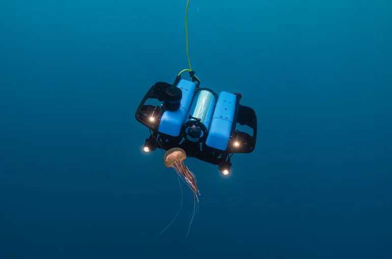

May 2026 – Aug 2026
Mechanical Design Co-op
Blue Robotics
Designed and tested underwater robotic hardware, custom test equipment, and subsea cable connectors while gaining hands-on exposure to product design, industry workflows and multivariable testing.
